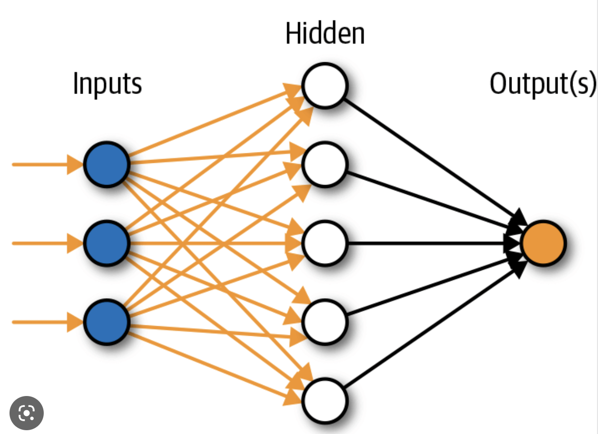
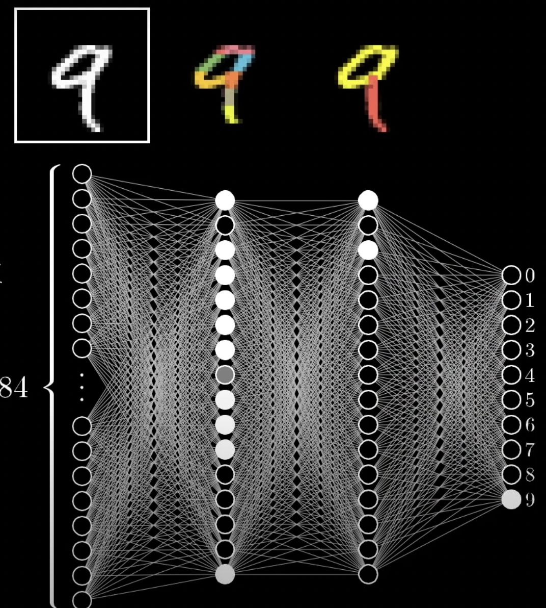

I forløbet om machine learning lærte vi det mest basale om maskinlæring (ML) og kunstig intelligens (AI), og om hvad det kan bruges til. Herunder undersøgte vi programmerne Teachable Mashines, DreamIO GPT-3 osv, og deres evner. Computernes langsomme overtagen har både sine ulemper og fordele, og debatten om etiske spørgsmål er blusset op. På den ene side skaber kunstig intelligens mange nye muligheder, herunder effektivisering, hjælp på arbejdsmarkedet, f.eks. lægehjælp, selvkørende biler osv. På den anden side kan det i længden betyde at menneskers intelligens og arbejdskraft blive ligegyldig, og en stor del af befolkningen kan blive arbejdsløse. Og hvad gør man når en computer står i et etisk dilemma, f.eks. en selvkørende bil med hfor høj fart, der enten skal køre den gamle dame eller det lille barn ned?
På denne side vil jeg gennemgå nogle af de mest grundlæggende ting ved mashine learning og kunstig intelligens.
Mashine Learning er en underkategori inden for kunstig intelligens. Ud fra en masse erfaring og eksempler er den i stand til at lære ting, uden at blive programmeret til at udføre kun én specifik opgave. Dette gøres ved at træne dens algoritme, hvorefter den kan anvende erfaringerne til at genkende mønstre i nye data.
Kunstig intteligens er et mere overordnet emne indefor computerteknologi, med det formål at skabe teknologier der kan erstatte menneskelig intelligens. For eksempel selvkørende biler.
Opdelingen mellem AI, ML og DL er forsøgt illustreret i nedenstående tegning:
Et neuralt netværk består er en mængde små neuroner, computerenheder, der er sammenkoblet i et netværk, ligesom neuroner i vores hjerne (heraf også navnet). Hver neuron har sin egen talværdi. For at kunne forklare systemet tager vi et eksempel med et neuralt netværk der er lavet til specifikt at kunne genkende billeder af håndskrevne tal. I dette eksempel ville vores "input layer" (se illustration nedenfor) være en række neuroner der hver holder en farveværdi for billedet. "input layer" har altså ligeså mange neuroner som pixels på billedet. Den værdi neuronen har kaldes dens activation. vores "output layer" ville i eksemplet være en neuron der kan genkende tallet. Beregningen der ligger mellem vores "input" og "output" kan "hidden layer". Denne kan også betragtes som en black box, hvor vi egentlig ikke er klar over hvad der sker. Men overordnet set fungerer det neurale netværk sådan, at hver neuron aktiverer en ny neuron, som aktiverer en ny neuron, osv, indtil kun én neuron kan genkende tallet.
Når vi mennesker ser tal identificerer tal kigger vi på dele af dem, hvorefter vi sammensætter dem til en tal vi kender. For eksempel består et 9-tal af en streg og en cirkel. Hvis man simpelt vil prøve at forstå vores "hidden layer" gør de noget lignende. En neuron ville her gidentificere en streg, dette ville aktivere en ny neuron der identificerede en cirkel, og til sidst ville en ny neuron sammensætte det til et 9-tal. Iden kan dette brydes ned i endnu mindre dele, her hvordan neuronerne identificerer former, og sådan kunne man blive ved. Dette er vist op billedet nedenfor.
